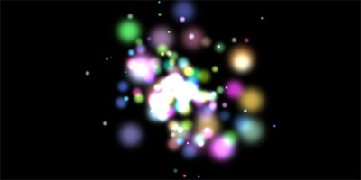
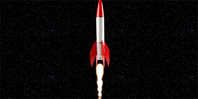

Examples（使用例）
Sparks、スパーク、爆発系
sun
炎の爆発するようなパーティクル
fireball
単体の炎が燃える感じ
eight-diagrams
8つのダイアグラム、赤と青の炎がお互いの尻尾を追い掛ける感じで回る、クリックすると散る
bomb
爆発、より爆発する感じ
drugs

ドラッグ、七色の炎が爆発する感じ
fireworks
花火
bigfire
大きい炎、火山の噴火のような感じ
Behaviour、振る舞い
attraction
引き付ける（引力）、細い花火＋マウスクリック箇所追随
gravitation
引き付ける（重力）、細い花火＋重力移動あちこち
collision
衝突判定、ボール生成＋衝突＆落下
collision-ball
衝突判定（ボール）、ボール生成＋あちこち流れ星っぽく移動
circle
円、線が渦巻のように伸びていく
star
星、星が生成された後にクリックした箇所に伸びていく
randomdirft2
ランダムな漂流2、植物の根のようなのが伸びていく
randomdirft3
ランダムな漂流3、植物の根が青くなったようなのが伸びていく
rotate
回転、矢印アイコンがクリックした箇所から360度花火のように伸びていく
fireflies
蛍、ホタルのような光が舞う
repulsion
反発作用、無数の光が流れるように移動する
color
色、白地に無数のカラーの球が溶け込んでいく
linebug

線のバグ、無数のシングルラインが回転したり反射したり、ランダムに移動したりする
Game、ゲーム
collie
コリー、キャラクター（コリー犬）のスクロール＋ジャンプ＋衝突
easeljs
easeljs（createJS）、走る人からハートマーク
pixijs
PixiJS、キャラクターの移動＋雨・コイン・渦巻生成
statsを拡張したviewでパーティクル数や、エミッター数等が見れる
asteroids
小惑星、ロケットの移動＋弾打ち＋噴射
quarkjs
クォーク（粒子）、雨粒＋キャラクター分身
Renderer、レンダラー別
pixelrenderer
ピクセル単位のレンダリング、ピクセル単位で収束したり吸い込まれるような動き
pixelrenderer2
ピクセル単位のレンダリング2、ピクセル単位で収束したり吸い込まれるような動き、
GoogleやTwitterのロゴにモーフィング
pixelrenderer3
ピクセル単位のレンダリング3、ピクセル単位の煙が伸びたりするような動き
canvasrenderer
canvasのレンダリング、Chrome、サファリ、Firefoxのロゴがコインパーティクルのように散らばる動き
domrenderer
domのレンダリング、Chrome、サファリ、Firefoxのロゴがコインパーティクルのように散らばる動き
easelrenderer
easeljs（createJS）のレンダリング、菜の花がぱらぱら落ちてくるような動き
webglrenderer
WebGLのレンダリング、光と炎の熱源体が流れるような動き
pixirenderer
PixiJSのレンダリング
pixirenderer2
PixiJSのレンダリング2、PIXIJS上でキャラが多数ばら撒かれりる動き
スペースキーで、変化するプロパティを増やしたり、エンターキーでdestroy()出来る
customrenderer
カスタムのレンダリング、黒い円がブラウザの中でぶつかったり跳ねたりする動き
クリックで円のインスタンスを生成して別ウィンドウで表示出来る
Emitter、エミッター
emitter
エミッター、カラフルな円がライン状になって湧き出てくる動き
follow-emitter
ついていくエミッター、円（加算）がクリックし箇所から生成されて落ちていく動き
mouse-emitter
マウスダウンで発生するエミッター、クリック箇所から青い円が生成されて散っていく動き
Spitfire

スピットファイア、湧き出る炎＋落ちる火花
imagetarget
画像ターゲット、モノクロの炎パーティクル
rock

ロケット、ロケットの噴射するエフェクト
bg-particle
背景のパーティクル、線画の六面体が回転しつつ繋がるような動き
Zone、ゾーン
circlezone

円のゾーン、文字が湧き出てくる動き
imagezone
イメージゾーン、小さい円が湧き出てきて文字を形成
linezone
ラインゾーン、鉄筋のような線が伸びていく動き
pointzone
ポイントゾーン、追随する星が全体的に回転する動き